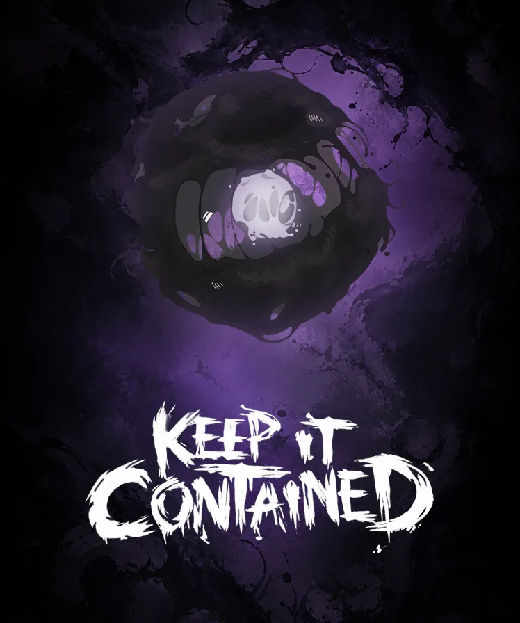

Press Kit · Studio
Triarch
Interactive
An independent game studio from Istanbul and Berlin. We make PC games for Steam, mobile games for Google Play and free games for the browser — everything built in-house by a team of five.
Factsheet
- Studio
- Triarch Interactive
- Based in
- Istanbul, Türkiye & Berlin, Germany
- Team
- 5 people, all game-design graduates
- Ownership
- Independent, self-published
- Platforms
- PC (Steam) · Android (Google Play) · Web
- Website
- triarchinteractive.com
- Press contact
- business@triarchinteractive.com
About the studio
Triarch Interactive is an independent game studio driven by a genuine love for games. Our goal is to make the kinds of games we love to play ourselves — titles that feel well-crafted, memorable and worth your time.
We focus on strong core mechanics, thoughtful design and meaningful player experiences. Rather than chasing trends, we build games with character, clarity and care.
The team is split between Istanbul and Berlin and works on one shared build. We make every game ourselves, start to finish: design, code, art and release.
Our first Steam release, Keep It Contained, launched in Early Access on 7 August 2026. Keep It Checked and Take That Shot are next on PC, alongside a growing line of mobile and browser games.
Game press kits Pick a title

Keep It Contained
Co-op communication game: one player inside the facility, the rest read the protocols.
Early Access · SteamKeep It Checked
Spot the anomaly in a looping research-facility corridor. Turn back, or keep walking.
Q4 2026 · Steam
Take That Shot
You're a basketball. Climb a tower of floating junk with up to 8 friends.
Demo out · Full game Q1 2027Also from the studio: Tinker's Nook and Endless Check (PC, in development), our Google Play games and Border Battles on the web — see all games.
Logos PNG · transparent · 1000×1000


More variants (with solid backgrounds) are in the studio kit .zip. Please don't recolour, stretch or add effects to the logo.
Brand
#000000#FFFFFF#4C008EBlack and white are the base; purple is the accent, used sparingly. The logo typeface is Neue Plak (Black for TRIARCH, Regular for INTERACTIVE), with Montserrat as the fallback.
Using these materials
Journalists, content creators and streamers may use the logos, screenshots, key art and trailers on these pages to cover Triarch Interactive and our games, in print, online and on video. Monetised videos and streams of our games are welcome. If you need something that isn't here — a review key, higher-resolution art, an interview — just ask.
Press contact
Review keys, interviews, preview builds and anything else — we answer every request.